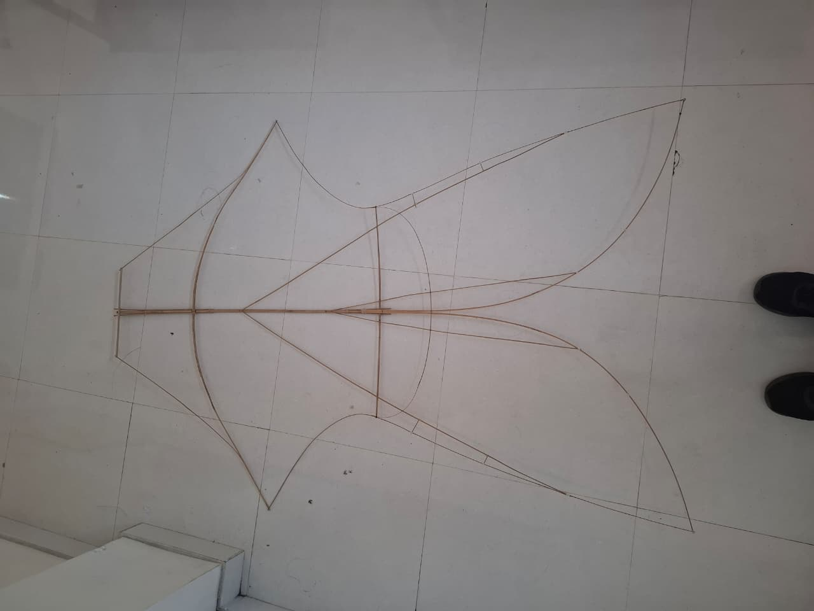
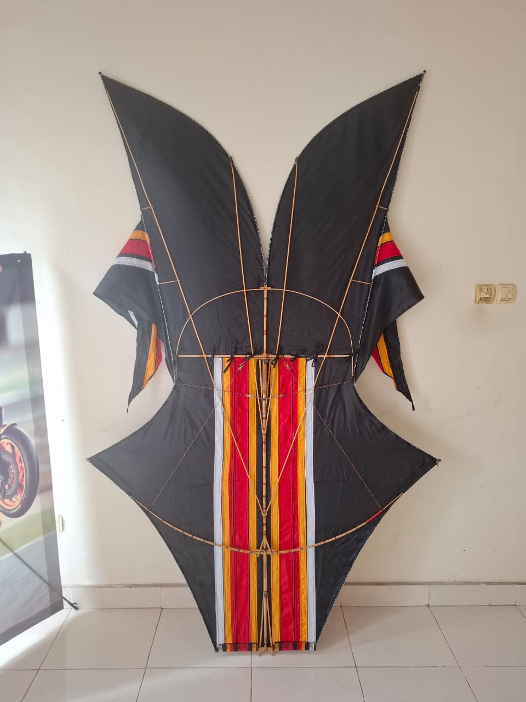

Sebuah kerajinan handmade yang mempertahankan karakter layangan tradisional Bali dengan sentuhan inovasi modern melalui sistem knockdown dan pengalaman digital QR Code.
Produk kerajinan tradisional Bali yang dikembangkan dengan pendekatan handmade dan inovasi modern.
A.A. Bagus Khrisna Mataram (02/XII F3)
I Wayan Wing Pandu Winata (13/XII F3)
Layangan Bebeán adalah salah satu jenis layangan tradisional khas Bali yang memiliki bentuk dan karakter visual yang unik.
Produk dibuat secara handmade menggunakan rangka bambu dan kain dengan tetap mempertahankan ciri khas layangan Bebeán tradisional.
Layangan memiliki ukuran sekitar 140 cm (1,4 meter) dan menggunakan sistem knockdown atau bongkar-pasang sehingga lebih praktis untuk disimpan dan dibawa.

Mempertahankan keberadaan layangan tradisional Bali sebagai bagian dari budaya dan kreativitas masyarakat Bali.
Menggunakan sistem knockdown atau bongkar-pasang agar layangan lebih praktis dalam penyimpanan dan transportasi.
Menambahkan QR Code yang menghubungkan produk fisik dengan informasi digital mengenai produk, proses pembuatan, dan nilai budaya layangan Bebeán.
Digunakan sebagai bahan utama untuk membuat rangka layangan.
Digunakan sebagai bagian utama permukaan layangan.
Motif garis khas digunakan untuk memperkuat identitas visual layangan.
Bahan pendukung digunakan untuk menyatukan dan memperkuat bagian-bagian layangan.
Memilih dan menyiapkan bambu yang sesuai untuk digunakan sebagai rangka layangan.
Bambu dipotong dan dirangkai menjadi kerangka layangan Bebeán dengan ukuran sekitar 140 cm.
Kain dipotong dan disiapkan sesuai bentuk rangka layangan.
Kain dipasang pada rangka bambu hingga membentuk permukaan layangan.
Motif garis khas ditambahkan untuk memberikan identitas dan nilai estetika pada produk.
Bagian rangka dibuat menggunakan sistem bongkar-pasang agar produk lebih mudah disimpan dan dibawa.
Layangan diperiksa kembali untuk memastikan rangka, kain, motif, dan sistem bongkar-pasang berfungsi dengan baik.
Layangan Bebeán handmade dengan rangka bambu, kain hitam bermotif khas, dan sistem knockdown.

Dokumentasi proses pembuatan Layangan Bebeán secara handmade.
Produk menggunakan konsep penyimpanan knockdown atau bongkar-pasang, sehingga bagian rangka dapat dilepas dan disimpan dengan lebih praktis.
Sistem ini membantu mengurangi ruang yang diperlukan saat produk dibawa atau disimpan sekaligus menjaga bagian-bagian layangan agar lebih mudah ditata.
Perpaduan antara budaya tradisional Bali dan inovasi modern.
Modal awal terdiri dari modal pribadi dan kerja sama.
Perkiraan biaya produksi satu layangan.
Harga jual satu unit Layangan Bebeán.
Perkiraan keuntungan kotor berdasarkan harga jual dan biaya produksi.
Target produksi dalam perencanaan usaha.
Perkiraan pendapatan dari penjualan 12 unit.
Pecinta layangan, masyarakat Bali, wisatawan, kolektor kerajinan tradisional, serta masyarakat yang tertarik terhadap budaya dan kerajinan khas Bali.
Instagram / social media • QR Code digital • Promosi langsung • Foto dan video produk • Word of mouth
Layangan Bebeán bukan hanya sebuah permainan tradisional,
tetapi juga merupakan bagian dari identitas dan kreativitas
budaya Bali.
Melalui produk ini, kami berusaha mempertahankan nilai
tradisional sekaligus memberikan inovasi melalui sistem
knockdown dan media digital QR Code.
Produk ini diharapkan dapat menjadi contoh bahwa kerajinan
tradisional dapat terus berkembang dan tetap relevan
di era modern.
A Traditional Balinese Kite with a Modern Touch.
Bali, Indonesia
@gungbgs09
+6281939478320